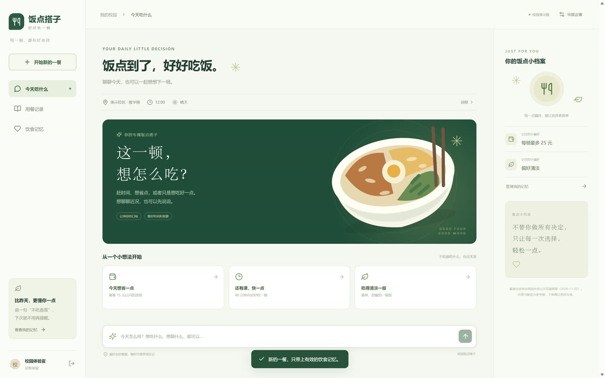
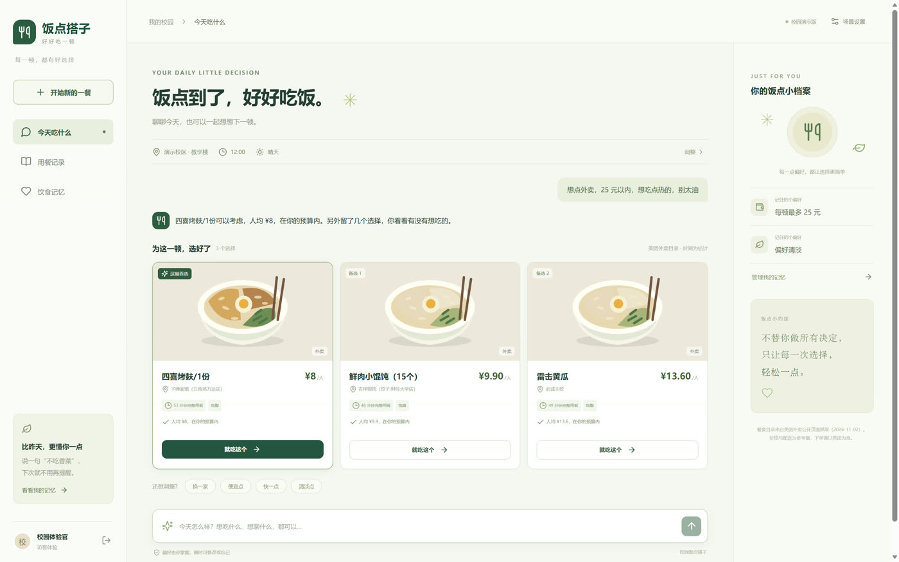
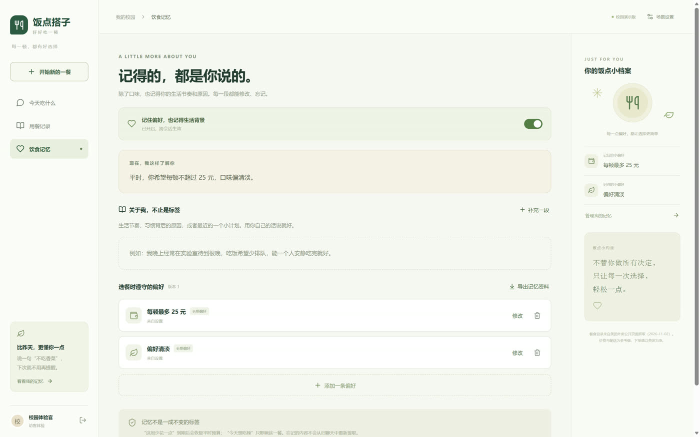

一句话，替你把这一顿定下来。真实美团菜单 · 本地规则选餐 · 断网也能用。
一句话
外卖软件给你两百个选项，它只给三个——每个都写着为什么是它：多少钱、等多久、符不符合你昨天说过的忌口。
3 次
吃什么 · 哪一家 · 多少钱。每次都从头想一遍。
5 分钟
刷完列表还是点回那家。时间花在犹豫上，不在吃上。
2 个 App
美团看评价，群里问食堂，没有人为你算预算。
它怎么想



数据
复旦周边的外卖列表，逐家抓菜单，然后洗一遍。清洗比抓取更重要——外卖菜单里混着加料、赠品和 0.01 元的商品券。
清掉 160 条：112 条是加料 / 小料 / 收藏福利 / 商品券 / 0.01 元赠品，48 条是无价商品与重复抓取。不清的话，你说「25 元以内」，它会给你推一颗一毛钱的煎蛋。
技术
pywebview + Edge WebView2，免安装 exe。
React 18 + TypeScript + Vite。
FastAPI，127.0.0.1 随机端口 + 会话密钥。
MCP 子进程，确定性打分：价格 / 时间 / 距离 / 忌口。
模型只负责把结果说成人话。所以不填 API Key 也能用，只是话没那么好听；断网也不影响选餐——所有数据都在你自己的电脑上。
我们知道的问题
下载
Windows 10/11 x64，需要 Edge WebView2 Runtime（多数电脑自带）。数据与对话都存在本机，不上传。
解压后双击 FandianDazi.exe。窗口是本地应用，不联网也能用；填了自己的 API Key 之后，聊天会更像人说话。